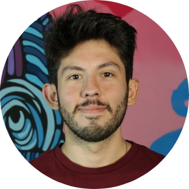

|  |
Facu SchiradoSoftware Developer · Cloud enthusiast Me gusta aprender nuevas tecnologias mientras bebo mucho cafe. Apasionado por el desarrollo personal y el crecimiento. Soy una persona muy activa, con preferencia a realizar deportes y actividades al aire libre. Puedo conversarte de cualquier tema. Me gusta leer mucho y aprender de las personas que me rodean. Contact Me |
|
|
Estudio desarollo de software, aprendiendo a utilizar la tecnologia mas demandada en el mercado. Es la Universidad mas innovadora de Francia. Utilizamos el peer to peer para aprender y trabajar en equipo.
Me gusta aprender cosas nuevas constantemente. Realizo cursos online dia a dia para fortalezer mis conocimientos y ampliar mi campo de habilidades. Actualmente mi desarrollo profesional esta enfocado a DevOps y todo lo referido al despliegue de infraestructuras en la nube.
Estudie ingenieria durante 4 años en mi ciudad natal, Salta-Argentina. Aprendi las bases de la ingenieria, superando los cursos de matematicas, fisica, estadistica y programacion. Ademas, por mis buenas calificaciones y entusiasmo por aprender accedi a un puesto de trabajo como Auxiliar de profesor en la asignatura de Analisis Matematico I.
Estudie bachillerato en mi ciudad natal. Tome la orientacion en Economia y gestion. Aportandome conocimientos administrativos y empresariales. La institucion salesiana no solo destaca por su buen nivel academico, sino tambien nos forma como persona haciendo enfasis en la etica y moral humana. Preparandonos para ser buenos ciudadanos.